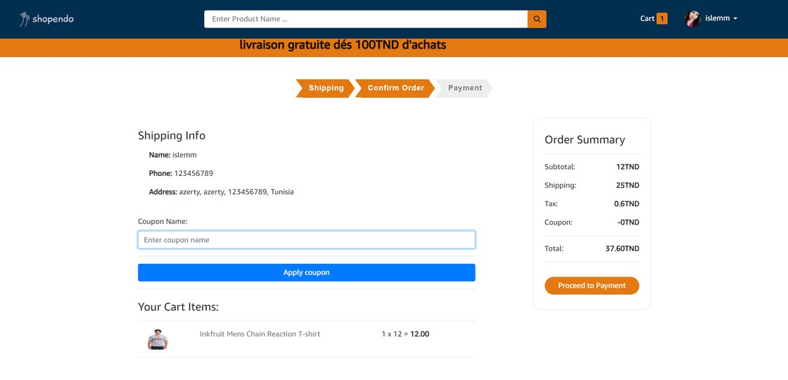

Built at AURAX · full-stack + recommender
Shopendo: Full-Stack E-commerce with AI Recommendations
Shoppers see similar products from their first visit, and the business team runs catalogue, prices, promotions and stock without a developer.
A MERN storefront with image-based recommendations, Stripe checkout and a self-service back-office with a revenue dashboard.
50k+product images searchable by look
Day onerecommendations with no purchase history
ReactNode.jsMongoDBFlaskStripe